../../../Users/wrightkevi/OneDrive/kw_work/rpack/agridat/vignettes/agridat_examples.Rmd
agridat_examples.Rmd| title: “Graphical Gems in the agridat Package” |
| author: “Kevin Wright” |
| date: “2021-12-17” |
| output: |
| rmarkdown::html_vignette: |
| md_extensions: [ |
| “-autolink_bare_uris” |
| ] |
| bibliography: agridat.bib |
| vignette: > |
| % |
| % |
| % |
The agridat package is an extensive collection of data sets that have been previously published in books and journals, primarily from agricultural experiments.
This vignette presents graphical views of a few of the datasets in this package.
This exhibit of agricultural data uses the following packages: agridat, desplot, gge, HH, lattice, latticeExtra, mapproj, maps, reshape2.
## Loading required package: desplot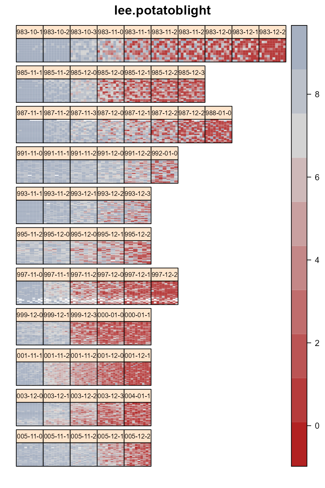
(lee2009random?) analyzed a large dataset to evaluate the resistance of potato varieties to blight. This data contains evaluations of a changing set of varieties every two years, evaluated in 5 blocks, repeatedly throughout the growing season to track the progress of the disease. Each panel shows a field map on the given date, with a separate row of panels for each year.
Would you include field spatial trends in a model for these data?
## Loading required package: latticeExtra## Loading required package: lattice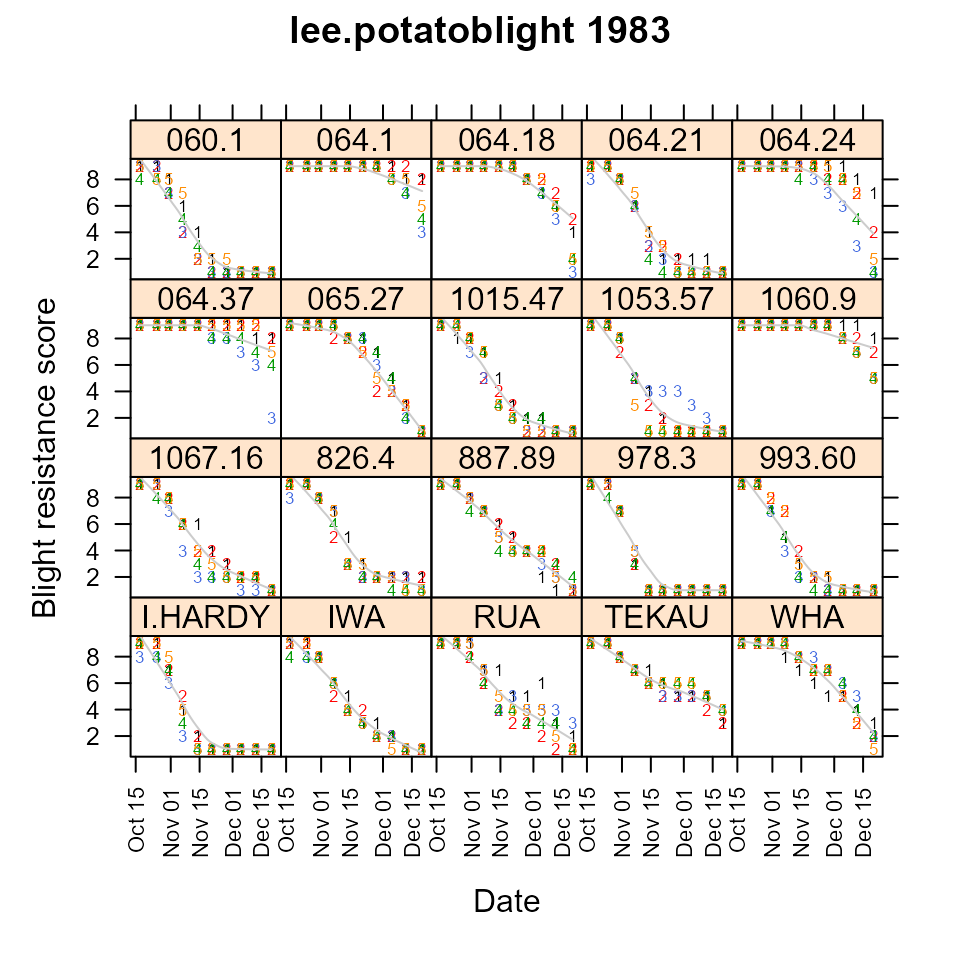
In 1983, 20 varieties were evaluated in 5 blocks (shown by colored numbers) throughout the growing season for disease resistance. Resistance scores start at 9 for all varieties (shown in panels). As the growing season progresses, the ‘I.HARDY’ variety succumbs quickly to blight, while ‘IWA’ succumbs steadily, and ‘064.1’ resists blight until near the end of the season.
Does this view show differences between blocks?
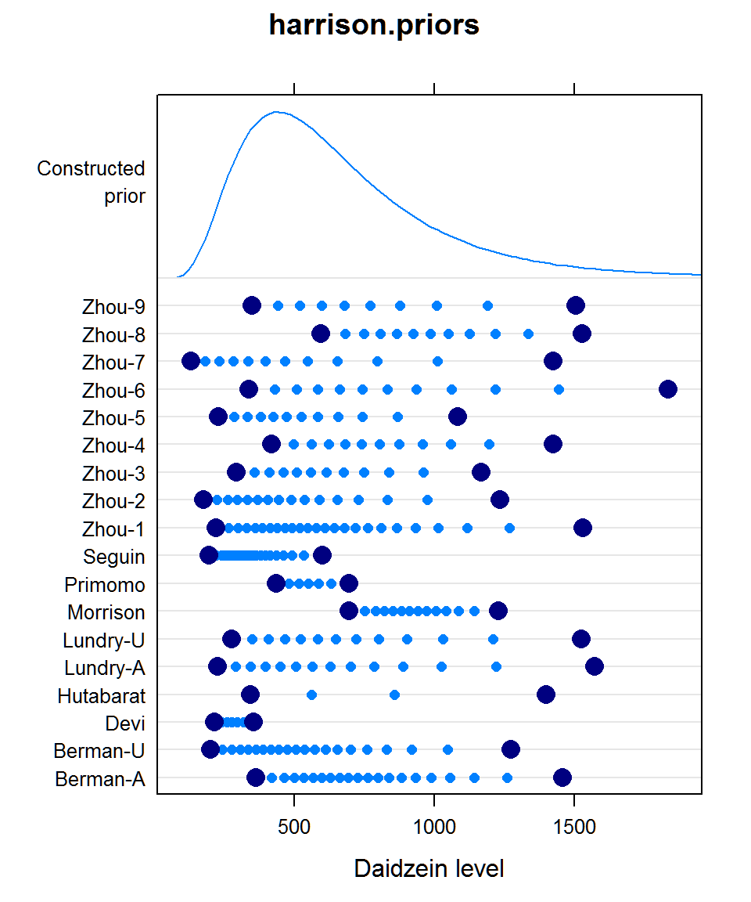
(harrison2012bayesian?) used a Bayesian approach to model daidzein levels in soybean samples. From 18 previous publications, they extracted the published minimum and maximum daidzein levels, and the number of samples tested. Each line in the dotplot shows large, dark dots for one published minimum and maximum. The small dots are imputed using a lognormal distribution.
All observed/imputed data were then used to fit a common lognormal distribution that can be used as an informative prior. The common prior is shown by the density at the top of the dotplot.
Do you think it is better to use a non-informative prior, or this informative prior?
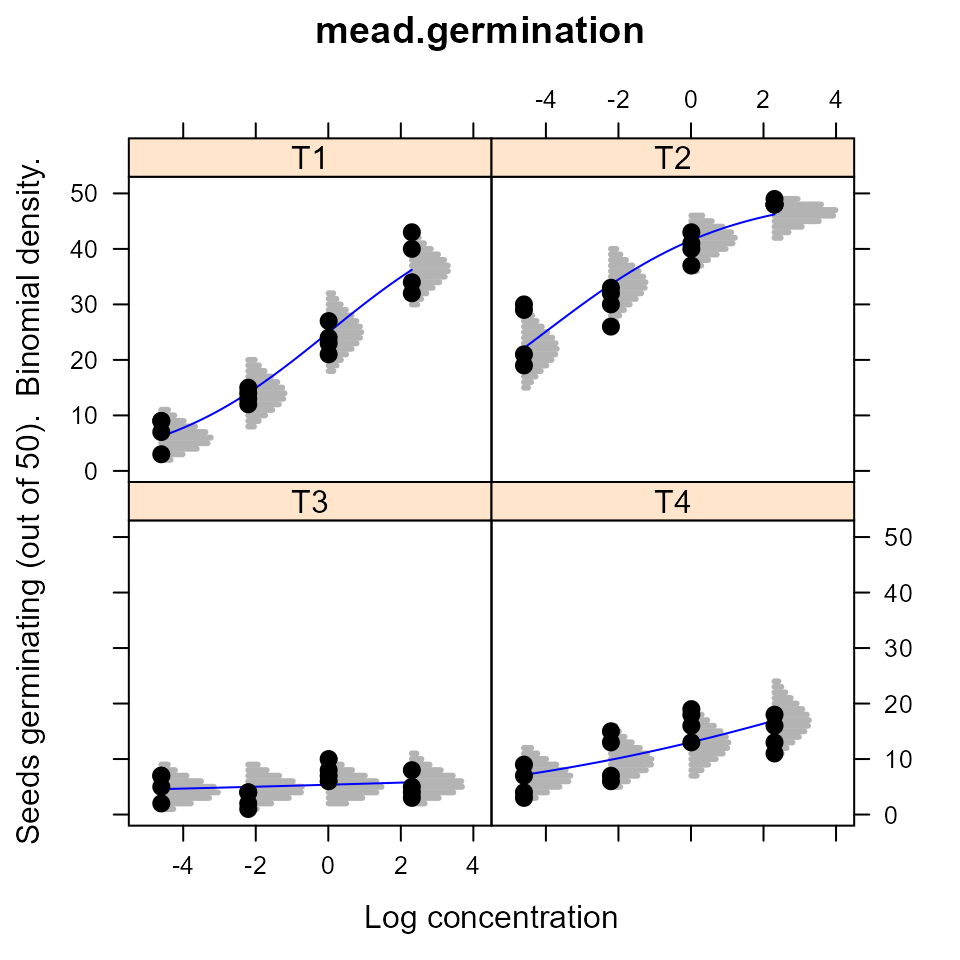
(mead2002statistical?) present data for germination of seeds under four temperatures (T1-T4) and four chemical concentrations. For each of the 4*4=16 treatments, 50 seeds were tested in each of four reps. In the graphic, each point is one rep. The blue line is a fitted curve from a GLM with Temperature as a factor and log concentration as a covariate. The gray lines show the central 95 percent of the binomial density at that position.
Does this display help you understand the logit link and changing shape of the binomial density?
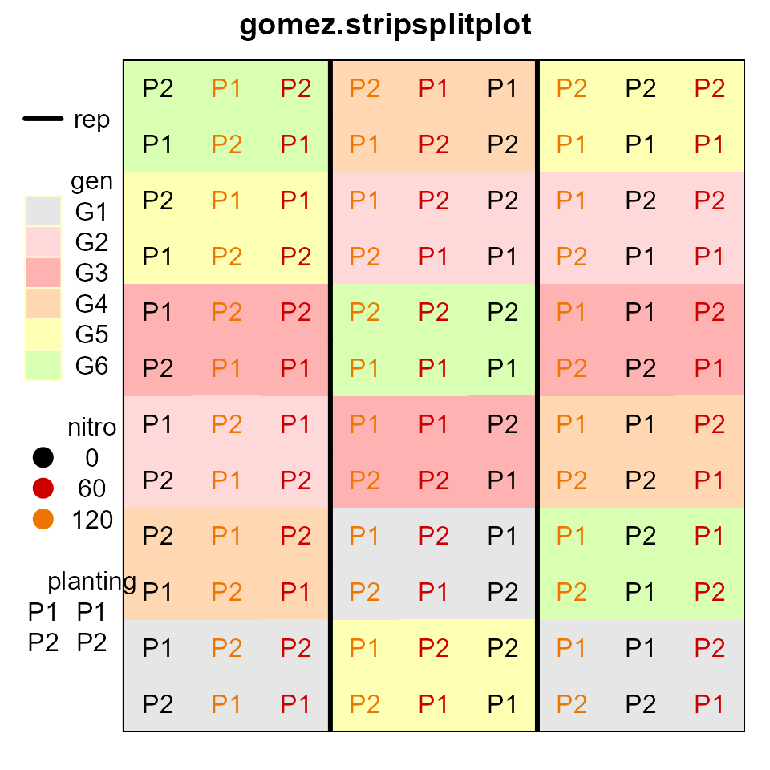
(gomez1984statistical?) provide data for an experiment with 3 reps, 6 genotypes, 3 levels of nitrogen and 2 planting dates. The experiment layout is putatively a ‘’split strip-plot’’. To verify the design, the desplot package is used for plotting the design of field experiments.
How is the design different from a ‘’split-split-plot’’ design?
## Loading required package: HH## Loading required package: grid## Loading required package: multcomp## Loading required package: mvtnorm## Loading required package: survival## Loading required package: TH.data## Loading required package: MASS##
## Attaching package: 'TH.data'## The following object is masked from 'package:MASS':
##
## geyser## Loading required package: gridExtra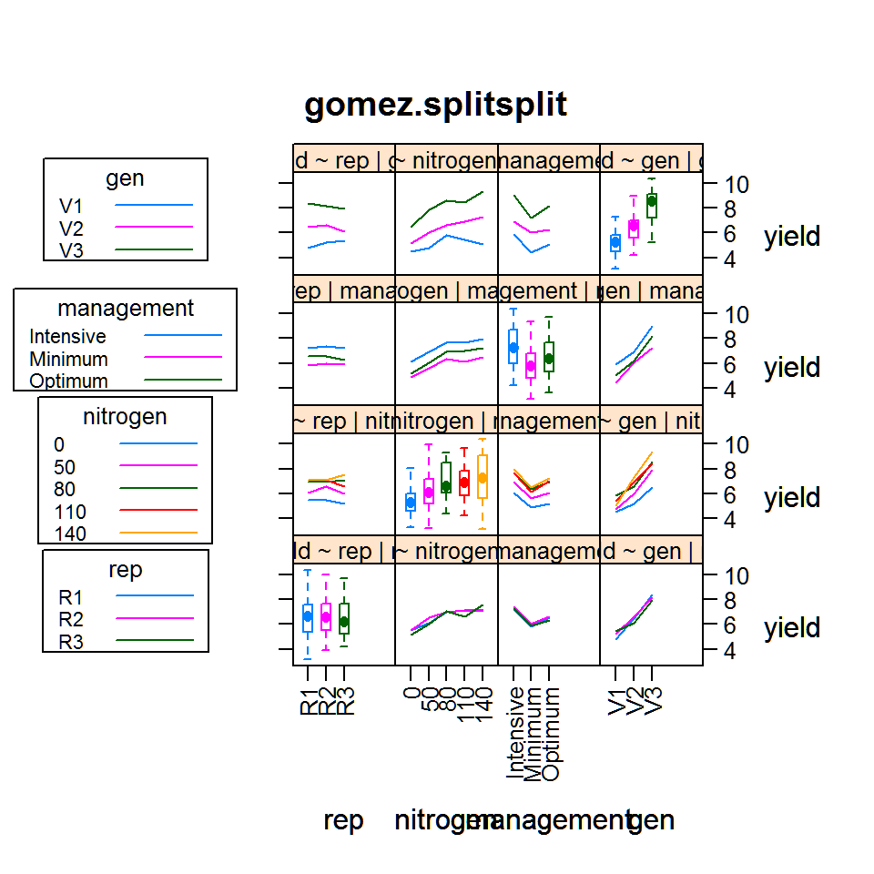
(heiberger2004statistical?) provide an interesting way to use lattice graphics to visualize the main effects (using boxplots) and interactions (using interaction plots) in data. Rice yield is plotted versus replication, nitrogen, management type, and genotype variety. Box plots show minor differences between reps, increaing yield due to nitrogen, high yield from intensive management, and large differences between varieties.
Do you think interaction plots show interaction (lack of parallelism)?
Note: This image was created by manual manipulation of an rgl device. The manual manipulation makes this non-reproducible in an Rmd file. See the example for the sinclair.clover data for the code.
(sinclair1994sulphur?) examined clover yields as a function of sulfur and phosphorous fertilizer in a factorial-treatment experiment. (dodds1996bivariate?) modeled the yield response using a Mitzerlisch-like equation that allows interacting curvature in two dimensions \(x\) and \(y\): \[ yield = \alpha * \left( 1 + \beta *\left(\frac{\sigma + \tau*x}{x+1}\right)^y\right) * \left( 1+\delta*\left(\frac{\theta + \rho *y}{y+1}\right)^x \right) \]
The blue dots are observed data, and the tan surface is the fitted surface drawn by the rgl package).
How would you decide the optimal fertilizer levels?
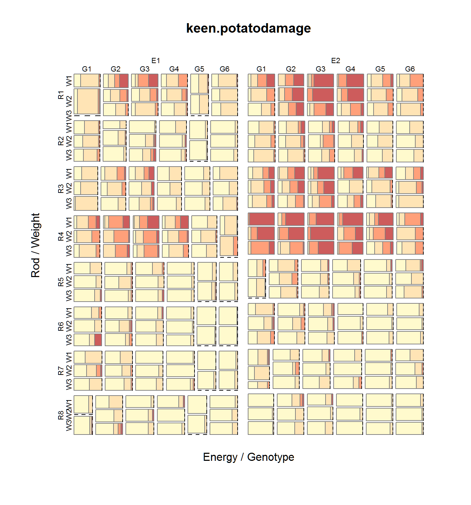
(keen1997analysis?) looked at damage to potatoes caused by lifting rods during harvest. In this experiment, eight types of lifting rods were compared. Two energy levels, six genotypes and three weight classes were used. For each combinations of treatments, about 20 potato tubers were rated as undamaged (D1, yellow) to severely damaged (D4, red). Counts per treatment are shown in a mosaic plot.
Which style of lifting rods cause the least/most damage to potatoes?
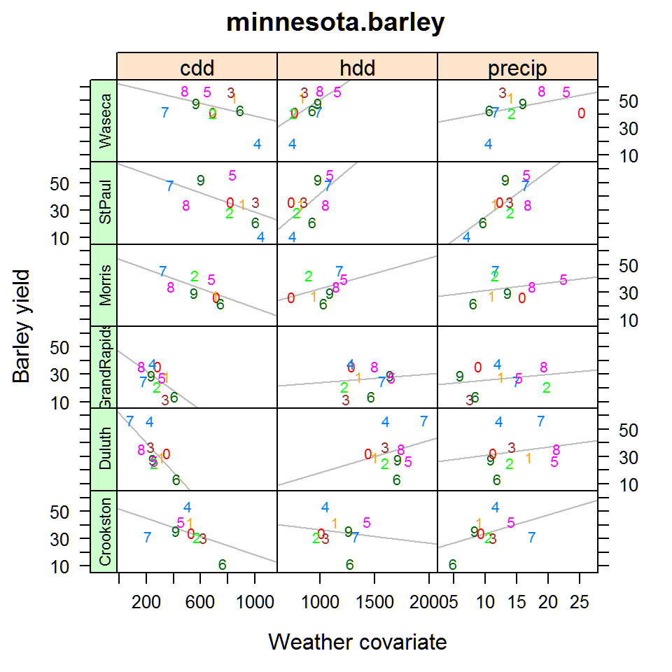
(wright2013revisiting?) investigated the lattice::barley data. The original two years of data were extended to 10 years (from original source documents), and supplemented with weather covariates for the 6 locations and 10 years. Each panel shows a scatterplot and regression for average location yield verses the weather covariate. Horizontal strips are for locations, vertical strips are for covariates: cdd = Cooling Degree Days, hdd = Heating Degree Days, precip = Precipitation). Higher values of heating imply cooler weather. Each plotting symbol is the last digit of the year (1927-1936) for that location.
Does barley yield better in cooler or warmer weather?
(laffont2013genotype?) developed a variation of the GGE (genotype plus genotype-by-environment) biplot to include auxiliary information about a block/group of environments. Each location is classified into one of two mega-environments (colored). The mosaic plots partition variation simultaneously by principal component axis and source (genotype, genotype-by-block, residual).
Which genotypes are best to each mega-environment?
## Loading required package: maps## Loading required package: mapproj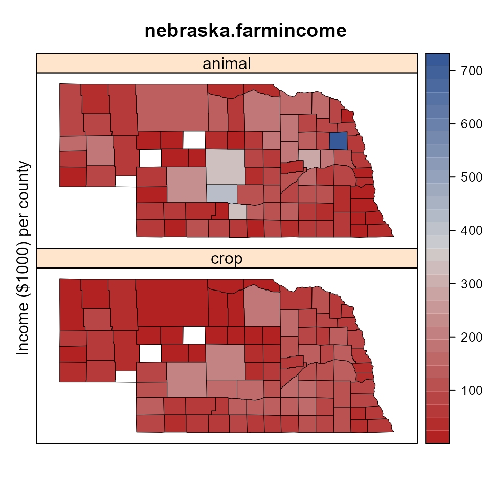
The Red-Blue palette in the RColorBrewer package is a divergent palette with light colors near the middle of the scale. This can cause problems when there are missing values, which appear as white (technically, the background). In order to increase the visibility of missing values, the agridat package uses a Red-Gray-Blue palette, with a gray color that is dark enough to clearly distinguish missing values.
How does the outlier county (Butler) in northeast Nebraska limit interpration of spatial patterns in the data?
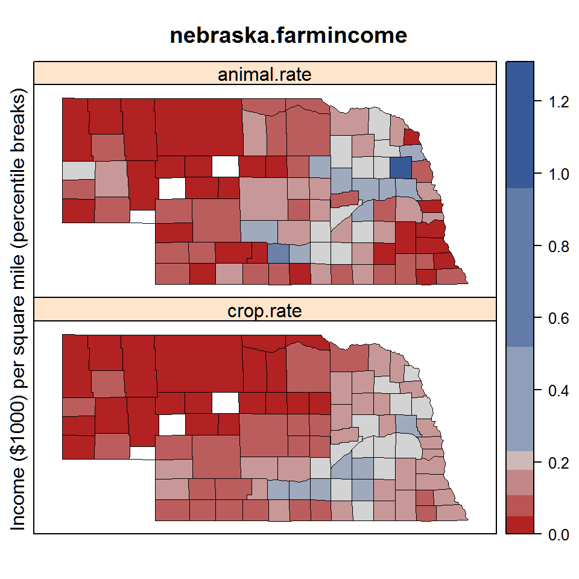
Because counties are different sizes, the second graphic uses an income rate per square mile. Because of the outlier, it might be smart to use percentile break points, but doing so hides the outlier. Instead, the break points are calculated using a method called Fisher-Jenks. These break points show both the outlier and the spatial patterns. It is now easy to see that northwest (Sandhills) Nebraska has low farming income, especially for crops. Counties with missing data are white, which is easily distinguished from gray.
Where are farm incomes highest? Why?
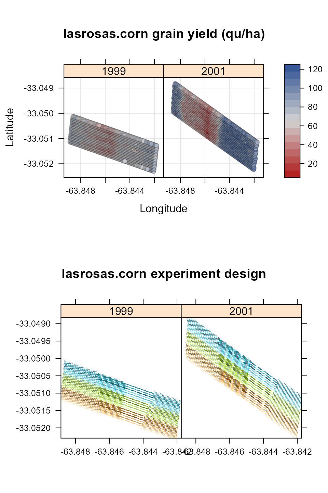
(anselin2004spatial?) and (lambert2004comparison?) looked at yield monitor data collected from a corn field in Argentina in 1999 and 2001, to see how yield was affected by field topography and nitrogen fertilizer. The figures here show heatmaps for the yield each year, and also the experiment design (colors are reps, shades of color are nitrogen level, plotting character is topography).
Which year showed greater spatial variation in yield?
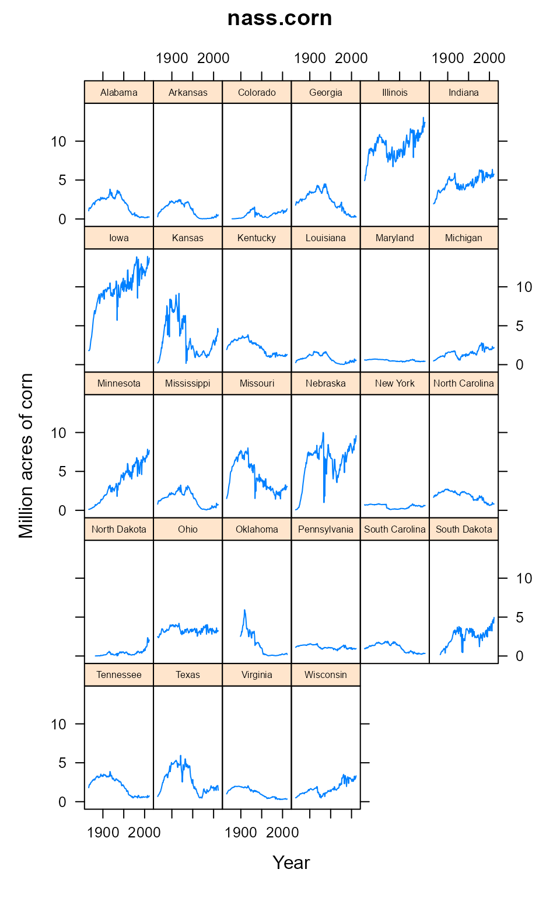
The National Agricultural Statistics Service tracks the total number of acres planted to corn (and other crops) for each state in the U.S. There are large changes over the past century in corn acreage for selected states.
Which states were in the corn belt in 1925?
Which states were in the corn belt in 2000?